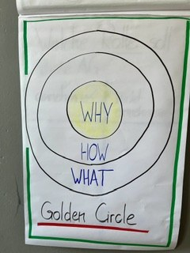
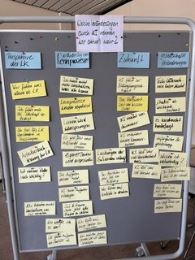
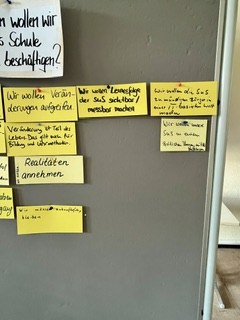
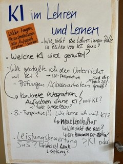
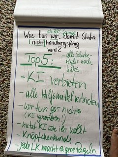
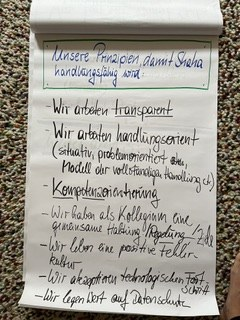
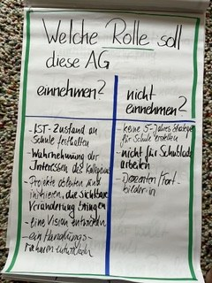

Worum es geht
Unser Auftrag
KI verändert, wie Schüler:innen lernen und wie wir unterrichten. Die AG KI erarbeitet dazu einen Vorschlag für unsere Schule: einen gemeinsamen Nordstern, Leitsätze für unser Handeln und konkrete Maßnahmen. Über die Umsetzung entscheiden Schulleitung und Gremien.
Das wollen wir als AG
- den Ist-Stand an unserer Schule festhalten
- die Interessen des Kollegiums wahrnehmen
- eine Vision und einen Handlungsrahmen entwickeln
- Projekte anstoßen, die sichtbar etwas verändern
Das wollen wir nicht
- eine Strategie für die Schublade
- eine Planung über fünf Jahre
- selbst Fortbildungen geben
Wie wir gearbeitet haben
Unser Weg
Wir arbeiten mit dem Golden Circle nach Simon Sinek. Zuerst klären wir, warum wir uns mit KI beschäftigen (WHY). Daraus leiten wir ab, wie wir handeln wollen (HOW) und was wir konkret tun (WHAT).
-
Sitzung 1 · 24. Juni 2026
Wahrnehmen und WHY
Wir haben gesammelt, welche Veränderungen durch KI wir erleben, und geklärt, warum wir uns als Schule damit beschäftigen wollen. Daraus entstanden vier Handlungsfelder.
Denkende Runde · Clustern · WHY-Wand
-
Sitzung 2 · 26. August 2026
HOW
Wir haben den Nordstern an einer erfundenen Schülerin geprüft: Shaha. Mit der Kopfstand-Methode haben wir gefragt, was Shaha daran hindern würde, handlungsfähig zu werden. Aus den Antworten haben wir Leitsätze abgeleitet.
Orientierungsimpuls · Persona · Kopfstand
-
Sitzung 3 · Termin folgt
WHAT
Wir prüfen die Leitsätze, bewerten Maßnahmen nach Wirkung und Machbarkeit und planen den Weg zur Entscheidung.
Min Specs · Shift & Share · Matrix Wirkung × Machbarkeit
Sitzung 1
Was wir wahrnehmen
Zu Beginn haben alle aufgeschrieben, welche Veränderungen durch KI sie erleben. Die Aussagen zeigen Unsicherheit und Chancen zugleich. Eine Auswahl:
Rolle der Lehrkräfte
Wir fühlen uns alleine als Lehrkräfte.
Ist meine Rolle noch wichtig?
Arbeitserleichterung für Lehrkräfte.
Lernen verändert sich
Lernprozesse werden abgekürzt.
Die Aufgaben passen nicht mehr.
Schüler:innen trauen sich jetzt, alle Fragen zu stellen.
Blick in die Zukunft
KI führt zur Bildungsungerechtigkeit.
Die Halbwertzeit von Wissen sinkt.
KI löst sehr viel Unsicherheit aus.
Gesellschaft
Tech-Unternehmen haben Macht.
Es wird nicht hinterfragt.
Man kann sich jetzt viel Wissen aneignen.
Für uns ist KI deshalb mehr als ein neues Werkzeug. Unsere Leitfrage lautet: Wie wollen wir als Schule unter veränderten Bedingungen Bildung gestalten?
WHY · Sitzung 1 und 2
Warum wir uns mit KI beschäftigen
Unsere Schüler:innen sind in einer von KI geprägten Berufs- und Lebenswelt handlungsfähig.
Auf unserer WHY-Wand wurden fünf Anliegen sichtbar:
- Befähigung
- Schüler:innen nutzen KI kompetent, kritisch und verantwortungsvoll.
- Orientierung
- Schule gibt jungen Menschen Halt im Umgang mit KI.
- Teilhabe
- KI-Kompetenz hängt nicht von den Voraussetzungen einzelner ab.
- Gestaltung
- Wir gestalten den Umgang mit KI aktiv mit.
- Zukunftsfähigkeit
- Wir entwickeln Lernen und Unterricht weiter.
Shaha
Shaha wurde gerade an der BBS Springe eingeschult. 2030 verlässt sie die Schule und ist in einer von KI geprägten Berufs- und Lebenswelt handlungsfähig. Woran erkennen wir das? Sie kann
- KI verstehen
- KI zielgerichtet nutzen
- KI reflektieren
- Ergebnisse beurteilen
- Lernen gestalten
- mit Veränderungen umgehen
Shaha ist eine erfundene Person, das Bild ist KI-generiert.
HOW · Sitzung 2
Wie wir handeln wollen Vorschlag
Der Kopfstand
Was müssten wir tun, damit Shaha garantiert nicht handlungsfähig wird? Unsere Antworten:
- KI verbieten
- alle Hilfsmittel verbieten
- KI ignorieren
- „Nutzt KI, wie ihr wollt“
- Knöpfchenkunde
- Jede Lehrkraft macht eigene Regeln
Aus dem Gegenteil sind unsere Leitsätze entstanden. In Sitzung 3 prüfen wir sie noch einmal.
1Wir gehen vom Lernen aus.
Unser Unterricht ist handlungs- und kompetenzorientiert. KI setzen wir dort ein, wo sie das Lernen stärkt, und machen sie selbst zum Lerngegenstand.
2Wir gehen gemeinsam vor.
Wir arbeiten nach gemeinsamen Zielen und transparenten, einheitlichen Regeln, die jeder Bildungsgang für sich konkretisiert. Niemand bleibt mit KI allein.
3Wir entwickeln uns in kleinen Schritten.
Wir erproben, werten aus, passen an und leben dabei eine positive Fehlerkultur.
4Wir verbinden das Lernen mit KI eng mit der Arbeitswelt unserer Berufe.
Wir beziehen unsere Ausbildungsbetriebe ein.
5Wir alle lernen dazu.
Lehrende und Lernende entwickeln Kompetenzen zu Lernen und KI. Dafür legen wir einen gemeinsamen Mindeststandard fest, und alle erhalten die Unterstützung, um ihn zu erreichen, unabhängig von ihren Voraussetzungen.
6Wir greifen technologische Entwicklungen offen und kritisch auf.
Wir achten auf Datenschutz und Nachhaltigkeit und treten Diskriminierung durch KI entgegen. Diese Themen machen wir auch im Unterricht zum Gegenstand.
WHAT · Sitzung 3
Was wir konkret tun in Arbeit
Unsere Fragen ordnen wir vier Handlungsfeldern zu. In Sitzung 3 bewerten wir dazu konkrete Maßnahmen nach Wirkung und Machbarkeit. Die Ergebnisse ergänzen wir hier.
Lehren und Lernen
- Wie verändern sich Unterricht, Aufgaben und Prüfungen?
- Was ist heute Leistung?
- Wie sieht die Rolle der Lehrkräfte aus?
Personalentwicklung
- Wie unterstützen wir Kolleg:innen mit sehr unterschiedlichen Voraussetzungen?
- Welchen Mindeststandard brauchen wir?
Infrastruktur
- Welche Zugänge, Geräte und Systeme brauchen wir?
- Wie finanzieren wir sie?
Recht und Ethik
- Was gibt der rechtliche Rahmen vor?
- Wie gehen wir mit Datenschutz, Diskriminierung und der Macht großer Tech-Unternehmen um?
Ausblick
Wie es weitergeht
- Sitzung 3 Leitsätze beschließen und Maßnahmen priorisieren
- Strategievorlage Die AG übergibt ihren Vorschlag an die Schulleitung.
- Entscheidung Beratung und Beschluss in den Gremien der Schule
- Umsetzung Wir empfehlen ein Team Digitale Bildung, das die Maßnahmen dauerhaft begleitet.
Ihre Rückmeldung
Was fehlt Ihnen? Was sehen Sie anders? Wir freuen uns über Ihre Gedanken.
Rückmeldung per E-MailEinblicke
Aus unseren Sitzungen













